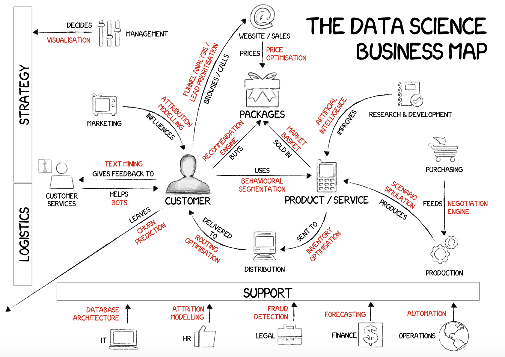

Khoa học dữ liệu với R
1 Khoa học dữ liệu và nghề phân tích dữ liệu
Khoa học dữ liệu là nhóm ngành ứng dụng việc tổ chức và khai thác dữ liệu để hỗ trợ hoạt động ra quyết định. Phạm vi của khoa học dữ liệu rất rộng, từ việc tổ chức, quản lý, quản trị dữ liệu cho đến khai thác dữ liệu dưới dạng các báo cáo đơn giản cho đến các ứng dụng của Machine Learning, AI.
Trong quá trình sử dụng, dữ liệu được đi qua nhiều bước trong vòng đời dữ liệu, bao gồm:
- Thu thập (Capture): Thu thập dữ liệu từ các hệ thống nguồn
- Lưu trữ (Store): Lưu trữ dữ liệu được thu thập
- Xử lý (Process): Xử lý, làm sạch dữ liệu
- Phân tích (Analysis): Báo cáo, phân tích, dự báo
- Sử dụng (Use): Đưa các kết quả phân tích vào hoạt động hàng ngày của hoạt động kinh doanh, vận hành, chia sẻ dưới dạng API dự báo, dashboard, report, insights
- Ngừng sử dụng (End of life): Đưa vào vùng đóng băng, hạn chế sử dụng
Trong các bước trên, việc phân tích dữ liệu (hay còn gọi là phân tích dữ liệu) được nhấn mạnh và chú trọng nhiều nhất trong vòng đời của dữ liệu.
Phân tích dữ liệu là quá trình đưa ra và chứng minh các giả thuyết (hypothesis) là đúng hoặc sai dựa trên cở sở sử dụng dữ liệu.
Do đó, yếu tố cốt tủy và nghệ thuật phân tích dữ liệu là đặt ra câu hỏi và biết cách trả lời câu hỏi một cách khoa học. Với cách tiếp cận như trên, dù là một báo cáo (report) thông thường cũng ẩn tàng các hypothesis mà người đưa ra yêu cầu muốn giải quyết.
Với sự phát triển của ngành, vai trò phân tích dữ liệu ngày càng được mở rộng và là vùng giao thoa giữa vị trí báo cáo phân tích truyền thống (Business Intelligence) và khoa học dữ liệu (Data Science).
1.1 Tại sao phân tích dữ liệu là nghề khó?
Theo quan sát cá nhân, phần lớn, các bạn làm trong ngành phân tích dữ liệu rơi vào một trong hai nhóm sau:
Nhóm một, chưa có nền tảng về phân tích thống kê. Ở nhóm này, các bạn thường không được đào tạo bài bản hoặc không có đủ điều kiện (phần lớn là về thời gian) để học các kiến thức về phân tích thống kê. Do nhu cầu của công việc, các bạn có thành thạo các kỹ năng về xây dựng báo cáo và phân tích khám phá dữ liệu đơn giản với SQL và Excel. Các bạn này thường thuộc các nhóm phân tích báo cáo (Business Intelligence) tại các tổ chức lớn hoặc làm trong startup. Điểm mạnh của nhóm này là làm việc sát với các bộ phận kinh doanh, hiểu rõ nghiệp vụ và nhu cầu nghiệp vụ. Tuy nhiên, điểm yếu của các bạn lại là không thể ứng dụng hoặc tự học và không biết cách triển khai các ứng dụng của khoa học dữ liệu ở mức độ cao vào công việc thực tế.
Nhóm hai, có nền tảng vững vàng về kiến thức thống kê, dự báo nhưng lại quá chú trọng vào các yếu tố kỹ thuật. Ở nhóm này, các bạn đều có nền tảng kiến thức về toán, thống kê rất tốt. Một số bạn được học và đào tạo cơ bản về khoa học dữ liệu, học máy và các ứng dụng của khoa học dữ liệu. Các bạn này có thiên hướng thích xây dựng mô hình dự báo, thích làm các bài toán lớn trong kinh doanh. Điểm mạnh của nhóm này là rất thông minh, chịu khó học hỏi và có thể áp dụng những kỹ thuật phân tích mới vào thực tế một cách nhanh chóng. Nhưng ngược lại, nhóm này lại có nhược điểm chết người là có thói quen chỉ tập trung vào việc phân tích dữ liệu mà thiếu đi cái nhìn tổng quát trong việc giải quyết bài toán thực tế. Không chỉ thế, nhóm này không có thế mạnh trong việc trình bày và giao tiếp, dẫn đến các kết quả thực tế không được các đơn vị kinh doanh nghiệp vụ đón nhận và sử dụng.
Đối với một tổ chức muốn phát triển dựa vào dữ liệu và muốn biến các quyết định của tổ chức dựa vào phân tích dữ liệu, cả hai nhóm trên đều là các trạng thái nên tránh và phải cân bằng được cả hai.
Phân tích dữ liệu đòi hỏi cùng lúc thực hiện ba nhóm công việc sau:
- Hiểu biết về vấn đề kinh doanh. Nghe có vẻ đơn giản nhưng qua quá trình làm việc thực tế, đây có lẽ là phần dễ bị bỏ qua nhất bỏi lẽ mấy nguyên nhân sau.
- Sự khác biệt của vận hành kinh doanh so với hoạt động phân tích dữ liệu.
- Tư duy và thái độ của nhóm phân tích dữ liệu: Các bạn phân tích kinh doanh (hoặc đôi khi được gọi là phân tích kinh doanh) thường tự coi mình là đơn vị hỗ trợ và cung cấp dữ liệu theo yêu cầu. Với lối tư duy thụ động này, các bạn sẽ không có nhu cầu tìm hiểu cặn kẽ các hoạt động kinh doanh, dẫn đến không hiểu hoạt động kinh doanh đủ sâu để có thể tư vấn và thuyết phục các bên kinh doanh trong việc triển khai các dự án phân tích dữ liệu mới.
- Nghiệp vụ kinh doanh rất phức tạp và thiếu hệ thống tài liệu ghi chép dưới góc độ khái quát cho hoạt động phân tích dữ liệu. Đây là vấn đề phần lớn các nhóm phân tích dữ liệu gặp phải. Để giải quyết vấn đề này, trong phần sau tác giả sẽ đưa ra phương pháp tìm hiểu hoạt động kinh doanh theo 6 nhóm vấn đề.
- Khai thác và phân tích dữ liệu: Đây là quá trình đòi hỏi phải có sự đầu tư phù hợp về thời gian đào tạo. Với nhóm có nền tảng hiểu biết về hoạt động kinh doanh tốt lại không được đào tạo hoặc không có thời gian để trau dồi thêm các kiến thức cơ bản về phân tích khám phá dữ liệu.
- Trình bày, thuyết phục và tư vấn cho các bên kinh doanh về kết quả phân tích dữ liệu, đòi hỏi kỹ năng kể chuyện (story telling) dựa trên số liệu.
Khi ứng dụng phân tích dữ liệu trong hoạt động kinh doanh, giá trị của phân tích chỉ là số 0 - sự phối hợp giữa kinh doanh và phân tích dữ liệu có thể so sánh tương ứng như số 1 và số 0 như sau:
0-1- Số không đứng trước, số 1 đứng sau. Trong trường hợp này, đội phân tích dữ liệu thường dễ bị tự mãn, cho rằng các phân tích mình đưa ra phải được đơn vị kinh doanh triển khai và sử dụng. Do đó, kết quả phân tích thường không được sử dụng do sự thiếu hiểu biết về hoạt động kinh doanh, thiếu thuyết phục trong quá trình triển khai. Trong trường hợp này, giá trị của phân tích dữ liệu hoàn toàn chỉ là số 0.- \(1^0\) - Số 1 đứng dưới, số 0 đứng trên. Trong trường hợp này, đơn vị kinh doanh quá đề cao giá trị và quá dựa vào hoạt động phân tích số liệu. Điều này sẽ dẫn đến sự thất vọng nếu các dự án phân tích số liệu triển khai chậm, không đưa ra được kết quả như kỳ vọng (dù có rất nhiều điều phân tích số liệu không thể làm được). Trong trường hợp này, giá trị của phân tích cũng chỉ là số 0.
1-0- Số 1 đứng trước, số 0 đứng sau. Trong trường hợp này, phân tích dữ liệu đứng ngang hàng và đi sau hoạt động kinh doanh. Trong trường hợp này, sự phối hợp giữa kinh doanh và phân tích rất nhuần nhuyễn và khéo léo - tư duy của phân tích số liệu được triển khai đơn giản nhưng mạch lạc, sắc sảo và khiêm tốn trong quá trình thúc đẩy kinh doanh. Trong trường hợp này, giá trị của phân tích dữ liệu có thể giúp giá trị của kinh doanh tăng lên 10 lần.
Như vậy, trong 3 trường hợp trên, chỉ có 1 trường hợp duy nhất phân tích dữ liệu có thể đem lại giá trị cho kinh doanh thực tiễn. Các tổ chức lớn gặp khó khăn trong việc biến ứng dụng phân tích số liệu vào thực tiễn do đặt sai vị trí của số 0 (phân tích số liệu) trong cả tổ chức.
Ba cấp độ của viết code: Trong quá trình làm việc trong lĩnh vực phân tích dữ liệu, chắc chắn chúng ta sẽ phải học và sử dụng các ngôn ngữ truy vấn/phân tích dữ liệu và sẽ trải qua 3 cấp độ như sau:
Viết thứ đơn giản. Ở cấp độ này, các bạn thường mới nhập môn phân tích dữ liệu, đầy lo lắng và thiếu tự tin ở bản thân và bắt đầu với những bài phân tích đơn giản để áp dụng các kiến thức mới học.
Viết càng nguy hiểm càng tốt. Ở giai đoạn này, các bạn đã có một lượng kiến thức nền tương đối vững và bắt đầu đi vào các phương pháp nâng cao. Do đó, các bạn thường có xu hướng khiến mọi thứ trở nên nguy hiểm, tô vẽ và đưa ra nhiều yếu tố không thực sự cần thiết. Với các bạn có xu hướng trực quan hóa, sẽ là đưa ra các biểu đồ đầy màu sắc và cực kỳ nguy hiểm. Với các bạn có xu hướng xây dựng mô hình dự báo, sẽ là dùng mô hình dự báo, học máy hoặc deep-learning mọi lúc, mọi nơi. Kết quả sẽ khiến người đọc ấn tượng nhưng có thể chưa thực sự có tính ứng dụng cao.
Chỉ viết những thứ có khả năng tái sử dụng, giải quyết vấn đề bằng phương pháp đơn giản nhất có thể có. Ở giai đoạn này, các bạn đã dung hòa được rất nhiều kiến thức của nghành phân tích dữ liệu với nhau và tiếp cận các vấn đề một cách mạch lạc, logic và rất chặt chẽ. Các bạn nắm rất vững khi nào nên dùng các phương pháp phân tích khám phá dữ liệu đơn giản thay cho các thuật toán phức tạp trong việc giải quyết các vấn đề kinh doanh.
Công thức tổng quát khi viết code:
Khi phân tích dữ liệu (hay bất cứ hoạt động nào cần phải viết code), công thức tổng quát cần phải ghi nhớ là:
\[e = mc^2 \Leftrightarrow error = ({more\;code})^2\]
Do đó, càng viết đơn giản, khả năng chúng ta giảm thiểu được các sai sót trong quá trình phân tích dữ liệu càng nhiều.
1.2 Phân loại hoạt động phân tích dữ liệu
1.2.1 Dựa theo cách thức tác động đến khách hàng
Khi làm việc thực tế, có nhiều nhánh trong hoạt động phân tích dữ liệu dẫn tới việc gây hiểu nhầm giữa các khía cạnh khác nhau. Khái quát hóa có thể chia làm hai nhánh lớn sau.
Phân tích dữ liệu để tác động lên khách hàng một cách trực tiếp. Với cách tiếp cận này, để có thể tác động trực tiếp lên khách hàng, kết quả của hoạt động phân tích dữ liệu phải được đưa vào thực tế dưới dạng API và tác động trực tiếp lên UI mà người dùng sử dụng. Các hệ thống
recommendation enginetrên các trang thương mại điện tử thuộc loại nàyPhân tích dữ liệu để tác động lên khách hàng thông qua những người ra quyết định. Đây là nhóm được sử dụng đặc biệt nhiều trong thực tế nhưng lại bị đánh giá thấp hơn so với nhóm đầu tiên. Nhánh ứng dụng phân tích dữ liệu này được dùng đặc biệt nhiều trong các tổ chức lớn như ngân hàng, bảo hiểm… Trong nhóm này lại tách thành hai nhóm nhỏ:
- Kết quả phân tích được thể hiện dưới dạng trình chiếu - công cụ thường hay được sử dụng nhất là powerpoint
- Kết quả được sử dụng dưới dạng phần mềm (data tools). Với dạng này, người ra quyết định sẽ sử dụng các kết quả từ các công cụ này để đánh giá và ra quyết định thay đổi chính sách, sản phẩm cho phù hợp với khách hàng. Các công cụ như Google Analytics, Tableau (BI tools), hệ thống CRM, Customer 360 thuộc dạng này.
Lưu ý:
- Đối với mô hình nâng cao hơn, kết quả phân loại, dự báo có thể được hiển thị trên các công cụ này và khiến người sử dụng dễ dàng hơn trong việc ra quyết định.
Căn cứ theo nguồn dữ liệu sử dụng để phân tích, có thể tách ra thành hai nhóm lớn:
Dữ liệu trong nội bộ doanh nghiệp.
- Nhóm dữ liệu nền tảng: Nguồn dữ liệu này thể hiện phần lớn hành vi, thói quen của khách hàng đối với sản phẩm, dịch vụ do doanh nghiệp nắm giữ. Tổ chức càng lớn, nguồn dữ liệu này càng khó được khai thác hết nếu không có hệ thống Data Warehouse tốt do gặp phải vấn đề phân tán và chất lượng dữ liệu. Các hệ thống như T24, W4, EBank, LOS của ngân hàng.. thuộc vào nhóm này
- Nhóm dữ liệu hành vi nền tảng kỹ thuật số: Dữ liệu chứa nhiều các thông tin event, activity của khách hàng trên web, app - thường được để dạng ẩn danh hoặc đòi hỏi sự hỗ trợ từ mảng công nghệ để có thể sử dụng và tracking. Nguồn dữ liệu từ Google Analytics, Insider, Firebase… thuộc nhóm này
Dữ liệu bên ngoài doanh nghiệp. Nguồn dữ liệu không do doanh nghiệp quản lý, phản ánh hành vi của khách hàng nói chung. Ví dụ - social network, blog, giao dịch trên các trang thương mại điện tử, etc.
Ngoài ra, theo định dạng, cấu trúc của dữ liệu có thể chia làm 3 nhóm lớn sau:
- Dữ liệu có cấu trúc (Structred data): Dữ liệu định dạng bảng với các hàng và cột (excel, csv, database)
- Dữ liệu bán phi cấu trúc (Semi-Unstructred data): Dữ liệu không theo trật tự bảng nhưng vẫn có thể chuyển đổi thành dữ liệu có cấu trúc (json, html)
- Dữ liệu phi cấu trúc (Unstructured data): Dữ liệu định dạng âm thanh, hình ảnh (image), video
Phần đa các bài toán triển khai trong doanh nghiệp sử dụng đến dữ liệu có cấu trúc hoặc bán phi cấu trúc. Trong phạm vi các note trong tài liệu này tập trung vào các kỹ thuật phân tích dữ liệu có cấu trúc.
Mục tiêu toàn bộ của hoạt động phân tích dữ liệu là sử dụng dữ liệu, thông qua phân tích, dự báo để tác động lên hành vi khách hàng nhằm gia tăng giá trị của sản phẩm, dịch vụ của doanh nghiệp đối với khách hàng.
Khái quát hóa hoạt động phân tích dữ liệu có thể thể hiện qua sơ đồ sau.

1.2.2 Dựa theo đặc tính của nghề phân tích dữ liệu

Nếu bám sát vào hoạt động của sơ đồ phía trên, ta có thể chia các hoạt động có liên quan đến dữ liệu thành 4 nhóm lớn.
- Data Governance - Quản trị dữ liệu: Quản trị các hoạt động ghi nhận dữ liệu vào hệ thống của tổ chức, đưa ra các quy định, quy trình để đảm bảo dữ liệu được đưa vào hệ thống một cách chính xác và đảm bảo yêu cầu của hoạt động kinh doanh. Ví dụ, dữ liệu địa chỉ của khách hàng phải để dạng dropdown theo các đơn vị hành chính để tránh sai sót (quận/huyện, phường/xã, tỉnh, thành phố)
- Data Management - Quản lý dữ liệu: Quản lý dữ liệu sau khi dữ liệu được đưa vào hệ thống của tổ chức, bao gổm làm sạch, tái cấu trúc, sắp xếp dữ liệu theo hệ thống để đảm bảo sẵn sàng sử dụng dữ liệu. Nhóm công việc liên quan đến Quản lý dữ liệu bao gồm các vị trí:
- Data Engineer: Kỹ sư dữ liệu, chịu trách nhiệm thực hiện việc dịch chuyển và biến đổi dữ liệu sang các vùng khác nhau
- Business Analyst: Phân tích nghiệp vụ, là cầu nối giữa kỹ sư dữ liệu với các hệ thống IT và nhu cầu nghiệp vụ. Với các tổ chức quy mô nhỏ, vai trò này nằm luôn cùng với Data Engineer nhưng với các tổ chức lớn, nghiệp vụ phức tạp, đây là vị trí đóng vai trò rất quan trọng
- DBA (Data Base Administrator): Quản lý, vận hành server hệ thống
- Business Intelligence: Khai thác dữ liệu để hỗ trợ hoạt động kinh doanh và quá trình ra quyết định. Đối với hoạt động BI, có thể chia thành ba cấp độ.
- Data provider - cung cấp dữ liệu: Đơn vị kinh doanh/ nghiệp vụ yêu cầu như thế nào, cung cấp chính xác như vậy
- Information & basic insight provider - cung cấp thông tin & các hiểu biết đơn giản về khách hàng và hoạt động kinh doanh: Đưa ra các nhận định, thông tin ở mức độ đơn giản nhưng rất hữu dụng cho hoạt động kinh doanh. Công cụ sử dụng cho cấp độ này phần lớn là Excel với pivot table đi kèm với các chỉ số thống kê cơ bản. Ví dụ, top 10% khách hàng chiếm đến 90% doanh thu của cả công ty.
- Advanced insights provider - cung cấp các hiểu biết sâu sắc về khách hàng và hoạt động kinh doanh. Để đưa ra các hiểu biết này, phải sử dụng nhiều đến các công cụ và mô hình thuộc nhóm
inferencenhằm tác động đến hoạt động kinh doanh. Ví dụ, khách hàng nếu có ít nhất 3 loại giao dịch trong 2 tháng đầu tiên có khả năng ở lại với ngân hàng cao hơn 20% so với các khách hàng khác.
- Predictive Modelling/ Optimization - Phân tích dự báo, tối ưu hóa. Ở mức độ này, công việc phân tích dữ liệu sẽ tập trung nhiều vào việc dự báo và tối ưu hóa. Ví dụ: Khách hàng nào là khách hàng có nhiều khả năng bán chéo được sản phẩm thấu chi? Các công cụ sử dụng trong cấp độ này là các phần mềm chuyên biệt về phân tích thống kê, dự báo như R/Python/SAS. Các vị trí thuộc nhóm này bao gồm
Data Scientist&ML/AI Engineer- Data Scientist: Xây dựng các mô hình dự báo
- ML/AI Engineer: Đưa mô hình dự báo vào môi trường thực (production) dưới dạng package, API realtime.
1.2.3 Dựa theo chu kỳ của khách hàng đối với sản phẩm
Xét về khía cạnh vòng đời sản phẩm, chu kỳ khách hàng, bất cứ hoạt động kinh doanh nào cũng có thể chia thành chu kỳ như sau.
- Tim kiếm khách hàng - acquisition: Giai đoạn thu hút khách hàng mới, mục tiêu của giai đoạn này là đưa khách hàng mới về doanh nghiệp. Giai đoạn này, khách hàng chưa đem lại doanh số mà phần lớn chỉ là ở mức đăng ký dịch vụ, sản phẩm và trải nghiệm.
- Kích hoạt khách hàng - activation: Sau khi một người đã trở thành khách hàng của doanh nghiệp, không có nghĩa người đó sẽ sử dụng sản phẩm dịch vụ mà thường phải có quá trình
on-boarding. Mục tiêu của giai đoạn này không chỉ là để khách hàng có những trải nghiệm đầu tiên với sản phẩm dịch vụ mà còn khiến các sản phẩm đó trở nên quen thuộc và khách hàng bắt đầu thực sự sử dụng sản phẩm dịch vụ. Đây là giai đoạn rất nhiều doanh nghiệp lớn quên không sử dụng và đưa vào vận hành, khiến khách hàng vừa ở giai đoạn acquisition đã chuyển sang giai đoạnchurn - Khai thác khách hàng - deep farming: Chỉ sau khi khách hàng thực sự sử dụng sản phẩm, dịch vụ, lúc này doanh nghiệp mới có thể tiếp tục khai thác khách hàng. Thông thường có hai nhóm là bán chéo (cross-selling) và bán thêm (up-selling).
- Giữ chân khách hàng - retaining customers: Sau một thời gian sử dụng sản phẩm, dịch vụ, khách hàng lúc này sẽ có xu hướng rời bỏ doanh nghiệp để sử dụng các sản phẩm khác cạnh tranh hơn. Do đó, mục tiêu phân tích trong giai đoạn này là dự báo, tìm kiếm và hỗ trợ các hoạt động kinh doanh giúp giảm
churn - Thu hồi nợ - collection/bad bank: Giai đoạn này thường chỉ sử dụng đối với các doanh nghiệp có hoạt động cho vay như ngân hàng. Mục tiêu phân tích là giảm tỷ lệ nợ, tỷ lệ nợ xấu
Ngoài các giai đoạn lớn trên, hoạt động phân tích dữ liệu còn tập trung vào 2 mảng lớn:
- Giữ chân khách hàng chủ động - proactively retaining customers: Phân tích để giữ chân khách hàng chủ động, ngay từ khi khách hàng chuyển qua giai đoạn có thể khai thác được. Nhiều doanh nghiệp lớn chưa chú trọng đến vấn đề này mà thường để đến khi khách hàng sắp rời bỏ doanh nghiệp mới tìm cách giữ chân. Khi đó, phần lớn mọi việc đã trở nên quá muộn.
- Phân nhóm khách hàng - customers segmentation: Phân nhóm khách hàng theo các đặc trưng về hành vi, tính chất để có thể đưa ra các sản phẩm phù hợp
1.2.4 Dựa theo nhu cầu về hoạt động trong doanh nghiệp
Nếu chia theo ứng dụng trong hoạt động doanh nghiệp, ta có thể chia ứng dụng của hoạt động phân tích dữ liệu như sau

1.3 Cách xây dựng nhóm phân tích dữ liệu
Để xây dựng nhóm phân tích dữ liệu, cần đảm bảo 3 nguyên tắc lớn sau:
- Nắm vững kỹ năng phân tích khám phá dữ liệu
- Bám sát hoạt động kinh doanh
- Đẩy mạnh tương tác nhóm & phân nhóm kỹ năng dựa trên sở thích và tính cách cá nhân.
Thứ nhất, nền tảng của toàn bộ hoạt động phân tích dữ liệu (Analytics) phải giải quyết được bài toán kinh doanh dưới góc độ phân tích dữ liệu. Do đó, không nhất thiết phải xây dựng các mô hình phức tạp để giải quyết bài toán. Ngược lại, trong nhiều tình huống, ta nên sử dụng các phương pháp đơn giản bởi hai lý do: thứ nhất - có thể giải thích cho kinh doanh và thứ hai - rất nhiều vấn đề không cần xây mô hình cũng có thể giải quyết ngay được bởi các nguyên nhân từ vận hành, con người và sản phẩm. Chỉ khi nắm vững được kỹ năng phân tích khám phá dữ liệu ta mới có thể đưa ra các nhận định và kết quả một cách nhanh chóng và chính xác hỗ trợ hoạt động kinh doanh.
Thứ hai, hoạt động phân tích được sinh ra nhằm phục vụ kinh doanh. Do đó, nếu không nắm vững đến một mức độ nhất định hoạt động kinh doanh, ta không thể đưa ra các kết luận thực tế và có thể triển khai được. Rất nhiều trường hợp, nhóm phân tích dữ liệu quá chú trọng đến mặt kỹ thuật và thuật toán, đưa ra những kết luận phi thực tế. Điều này cần tránh dối với các tổ chức hướng đến việc ứng dụng phân tích dữ liệu thưc tiễn hỗ trợ kinh doanh.
Thứ ba, các bạn làm việc trong lĩnh vực phân tích dữ liệu thường khá thông minh và thích làm việc tương đối độc lập. Tuy nhiên, bên cạnh đó còn có rất nhiều các khía cạnh khác nhau trong hoạt động phân tích dữ liệu. Có người ưa thích thuật toán và kiên trì và có thể tự học tốt nhưng lại yếu trong khâu giao tiếp và tương tác. Nhóm này nên khuyến khích phát triển các bài toán và vấn đề dự báo. Ngược lại, có nhóm rất thông minh, nhanh nhạy, thích thể hiện trước đông người nhưng lại thường xuyên cả thèm chóng chán. Nhóm này nên phát triển các kỹ năng khám phá dữ liệu, tìm kiếm insights và nên giao cho nhiệm vụ tương tác chính với kinh doanh. Ngoài ra, còn có nhóm trunh bình, việc gì cũng có thể làm ở mức độ khá nhưng không có việc gì thực sự nổi trội. Với nhóm này nên cố gắng bồi dưỡng để họ phát huy kiến thức tổng thể và hướng họ có thể back-up hai nhóm trên.
Thêm vào đó, việc phân rã kỹ năng còn giúp cho kiến thức không bị quá tập trung vào 1-2 thành viên, điều này có thể khiến cho hoạt động phân tích dữ liệu bị chậm lại do bị phụ thuộc vào những thành viên đó.
1.4 Lưu ý khi đọc tài liệu
Các chương tiếp theo được trình bày với những kiến thức lõi về phân tích số liệu với R. Các chương này sẽ được viết theo hướng ứng dụng của khoa học dữ liệu trong hoạt động kinh doanh. Do đó, ngôn ngữ cũng như cách tiếp cận trong cuốn sách này được cố gắng viết một cách đơn giản, dễ hiểu để trình bày các kiến thức, thuật ngữ khó hiểu của khoa học dữ liệu thành các ngôn ngữ bình dân.
Cuốn sách này sẽ không đi sâu vào lý thuyết của các thuật toán, mô hình thống kê mà sẽ cố gắng trả lời các khía cạnh sau.
- Thuật toán, mô hình đó là gì?
- Mô hình đó được sử dụng như thế nào?
- Khi giải thích cho các đơn vị kinh doanh, ta cần phải giải thích điều gì?
- Ứng dụng của mô hình trong thực tế như thế nào?
Bên cạnh đó, có nhiều phần còn tổng hợp thêm các kỹ thuật bổ trợ cần thiết cho hoạt động phân tích số liệu như git, cmd - đây là các kiến thức cơ bản cần thiết để có thể phát triển và làm việc trong lĩnh vực phân tích dữ liệu hiệu quả
Các nội dung trong các chương tiếp theo là tài liệu tổng hợp từ nhiều nguồn và được sử dụng với mục đích cá nhân như tài liệu tra cứu tổng hợp nên không thể tránh khỏi việc thiếu sót. Tài liệu này chỉ nên dùng như tài liệu tham khảo.
Đối với các bạn muốn tập trung phát triển Insights, nên tập trung đọc các chương sau:
Cấp độ 1 - Phân tích khám phá - bắt buộc phải nắm vững (chương 1-7)
- Giới thiệu cơ bản về R (chương 1)
- Xây dựng báo cáo với Rmarkdown
- Biến đổi dữ liệu với DPLYR
- Phân rã & xoay chiều dữ liệu
- Ngữ pháp biểu đồ với GGPLOT2
- Các chỉ số thống kê cơ bản
Cấp độ 2 - Phân tích khám phá - Kỹ thuật nâng cao - nhưng vẫn cần bắt buộc phải nắm vững (chương 8-10)
- Xử lý dữ liệu text
- Lập trình với purrr
- Lập trình hàm
Cấp độ 3 - cơ bản về các thuật toán & nguyên lý thường sử dụng:
- Nguyên lý dự báo & cơ bản học máy (chương 18)
- Mô hình hồi quy tuyến tính (chương 19)
- Mô hình logistics (chương 20)
- Cây quyết định & họ cây quyết định (chương 21-22)
- Phân cụm với kmeans (chương 38)
- Basket Analysis (chương 39)
Nâng cao
- Survival Analysis (chương 54)
- Quantile Regression (chương 59)
- Chuỗi thời gian (chương 41)
Các chương và nội dung khác dùng để tham khảo đọc thêm nếu cần. Tuy nhiên, với việc nắm vững các kỹ thuật trên đã giải quyết 95%+ các bài toàn thực tế trên các lĩnh vực khác nhau và giúp các bạn có thể dịch chuyển nhanh chóng sang các tầng insights nâng cao